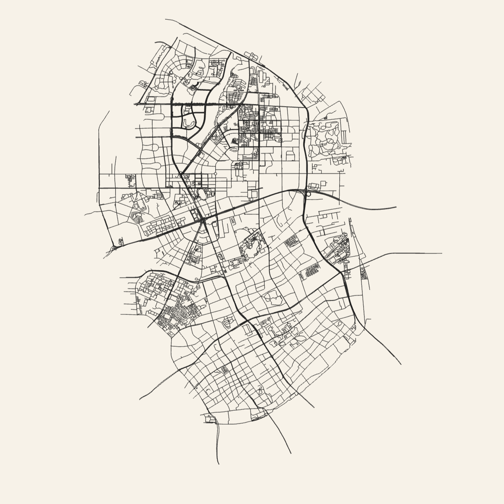

720° VR
驿站内部全景展示
方案设计：动静分区布局。外侧为繁忙区（补给），内侧为静区（休息）。
驿站发展历程
从试点摸索到智能化运营，骑手驿站不断升级，始终与骑手并肩前行
2018 · 探索
首批试点驿站
2018年，美团外卖在北京望京、上海中山公园等地启动首批5家骑手驿站试点，仅提供基础休息座椅和饮水机，但骑手反响热烈，日均使用超200人次。初步验证了驿站对骑手关怀的必要性。
覆盖城市
2城
核心功能
休息/饮水

从简朴到智能，始终温暖
全国骑手驿站分布
点击地图上的呼吸点，查看各省驿站特色与服务数据

* 呼吸点位置为示意，实际部署需配合精确地图
未选择省份
请点击地图上的呼吸点，查看该省驿站建设情况。
标准化功能模块

忙区 · 核心服务
能量补给站
24h热水、免费微波炉、平价简餐

生产 · 增效模块
智能快充/维修
智能换电柜、工具箱、车辆简修

静区 · 舒适空间
深度休憩区
冷暖空调、木质家具、静音环境

咨询 · 法律援助
法律与心理驿站
维权通道、心理疏导、政务办理
驿站服务流程
从入门到休憩，每一步都用心
休憩
为骑手提供安静、舒适的休息空间，配备可调节躺椅、降噪耳塞、轻音乐播放器，帮助快速恢复精力。
1
静音区：隔断设计，减少干扰
2
助眠：提供眼罩、充气颈枕

“1+N” 创新管理模式
1
每个驿站配备1名专职站长，负责物资监控与巡检。
N
吸纳“骑手合伙人”参与自治，实现自我服务与管理。
15min
服务半径
24h
全天服务
驿站动态 · 最新资讯

2026-03-01
冬季送温暖：暖姜茶供应
驿站已上线自动取暖器，并每日熬制新鲜姜茶供骑手免费领取。

2026-02-25
“骑手合伙人”新站挂牌
新站点由资深骑手老王担任兼职站长，协助维护日常秩序。

2026-02-20
安全培训：防滑指南
驿站邀请交警大队指导员进行线上线下同步的安全讲座。

年度优秀合伙人：陈师傅
“驿站就像家。我希望让新来的兄弟们感受到城市的温暖。”
500+
志愿时长
Lv.5
星级合伙人
联系我们 · 成为志愿者
无论是提供场地、捐赠物资，还是申请成为驿站站长，您的每一份力量都让这座城市更有温度。
服务热线
400-123-4567
官方邮箱
station@meituan.com

扫码加入
志愿者群